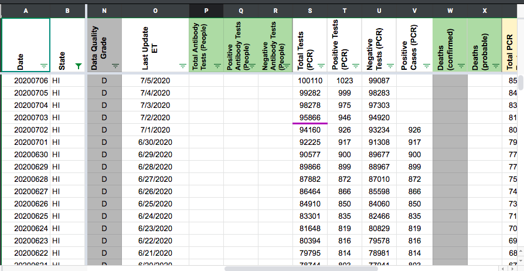
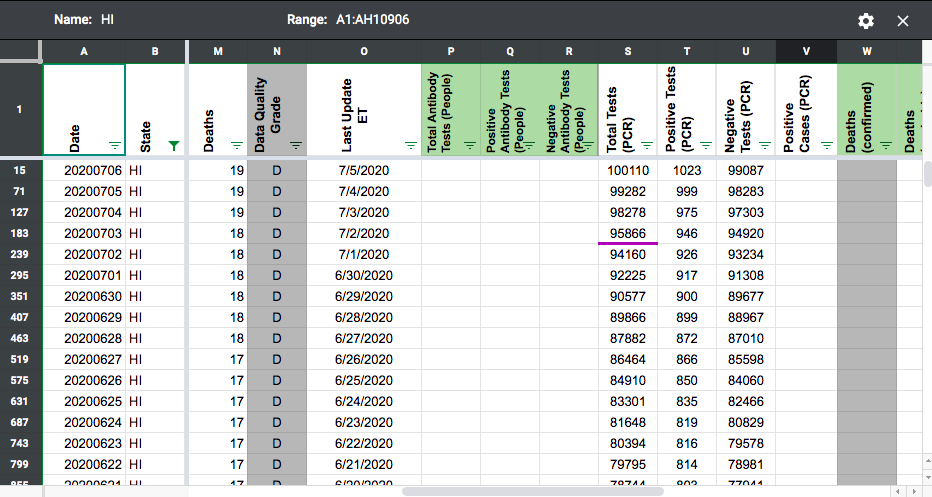
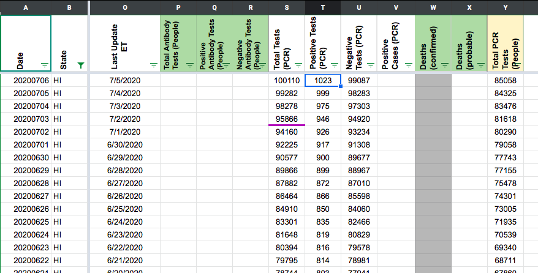
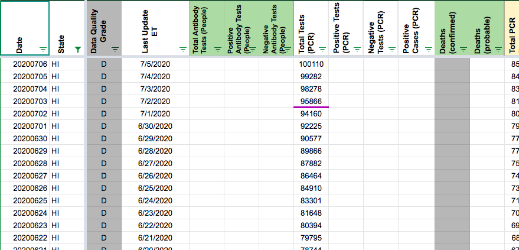

[HI] PCL Historicals and WS2
Issue number 571
jesseandersonumd opened this issue on July 3, 2020 at 7:28 am
Labels not stale PCL/SVP Historicals Backfill
Hawaii’s positive cases appear to lump together probables and confirmed, but WS2 reports this value under ‘positive cases (PCR)’. We should delete this value and only put it in ‘Positive Cases (People, confirmed + probable)’
BEFORE

AFTER - Corrected historicals for cases by removing values in positive cases (PCR) and leaving the values in positive (confirmed and probable) only.

BEFORE - 
AFTER - removed positive tests (PCR) and negative tests (PCR) values because both of these values are calculated based on positive cases (PCR), as noted by Rebma

Same goes for PCR positive/negative test results. Since we use the same source data to calculate them